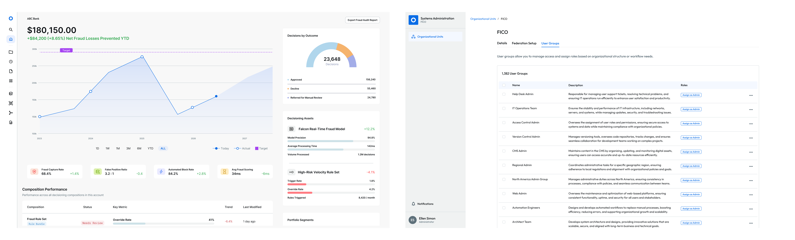

User Provisioning & Personalized Workspaces
The FICO Platform serves multiple user roles with different priorities. Without tailored experiences, users face information overload. The homepage was designed to adapt based on the assigned roles.
I designed the onboarding experience and role-based dashboard system for the FICO Platform, enabling workspace personalization by role.

Problem Statement
Homepages cluttered with irrelevant information can overwhelm users and bury what matters. Without personalized experiences, users could waste time navigating to irrelevant features and data.
The Existing Tool
Users struggle with the current platform. Too much irrelevant information leaves them confused about what to do next, wasting time navigating a one-size-fits-all interface. The problem is worsened by the inability to organize users by role, which prevents some from accessing their workspaces and forces everyone into the same generic experience.
The result is a one-size-fits-all system that leaves users without visibility into what's actually working or its business impact.
Overview
The FICO Platform serves a diverse group of users, from analysts to executives to admins, each with different priorities and goals.
For the initial internal release, the team focused on the admin setup and provisioning of user groups, as they are the essential pre-requisite for all downstream users.

Persona
Primary UserAdmin (FICO & Client)
Goal: Be the invisible force that keeps systems stable, secure, and performant with minimal manual intervention.
Pain Points: Manual, fragmented processes trap them in reactive firefighting instead of proactive governance work.
User Flow
-
Setup
- Digitize Contacts
- Create Organizational Unit
- Create Admin Group & Configure Identity Profile
-
Configure
- FICO Assigns Organization to User Group
- Define Policies (Base, Data, SLAs)
- Define Deployment Targets
- Create Roles & Groups
-
Assign Access
- Assign Users & Roles to Groups
- Configure Organizational Structure
-
Launch & Notify
- FICO Admins send Welcome to Admin
- Client Admins send Welcome to Users
- Platform Established
User Research at FICO World 2025
While I wasn’t able to attend FICO World in person, I collaborated with the Product Manager, Front-End Architect, and User Researchers, to determine which screens to be tested.
Optimizing for high-value feedback and tight presentation windows, we decided to narrow our showcase to the landing pages of 3 distinct personas. The landing pages would be areas with the most diverse information that’s user specific and would be the most revisited.
The three persona landing pages we focused on were:- Service Creator
- Business Analyst
- Solution Creator
Personas
Service Creator
The day-to-day orchestrator juggling work streams across different tools. Needs one place to see what's due, who owns it, and what needs attention now. Otherwise, deadlines slip and ownership gets lost.
Business Analyst
The builder and owner of asset relationships. Needs to see dependencies clearly so they can spot reuse opportunities and change safely. Otherwise, they're blind to cost savings and downstream ripples.
Solution Creator
The builder and owner of asset relationships and compositions. Needs to see dependencies and reuse clearly so they can spot optimization opportunities and change safely. Otherwise, they're blind to cost savings and the downstream ripples of their changes.
All 3 personas share the same underlying pain of missing critical relationships in their domain and being forced to manually piece together what needs unified visibility.
Landing Pages
Service Creator
The Service Creator's homepage is built to keep every active build in view. My Work consolidates all in-progress compositions in one place, while quick actions for creating solutions, browsing assets, and finding products sit above the fold for the tasks you do most.
Business Analyst
The Business Analyst's homepage is built to surface business performance at a glance. KPIs for fraud prevention, conversion, profitability, and spend sit up top, while a dedicated panel highlights which assets are driving results — so the Analyst can spot what's working without digging through reports.
Solution Creator
The Solution Creator's homepage is built to catch problems before they spread. An asset inventory tracks ownership and status, a live relationship map shows how solutions depend on each other and where work can be reused, and a real-time alert feed surfaces issues as they happen.
Research Findings
- 72% rated personalization as very/extremely important
- 80% wanted customization capability
- 8 features confirmed as HIGH priority
- Service Creators identified 'My Work' as essential.
- Users consistently expected role-based customization and persistent preferences.
What I'd measure after launch
This hasn't shipped yet — these are the targets I'm designing against, not results.
- 70%+ Target relationship map clarity for Solution Creators, up from 27% pre-launch
- 85%+ Target filter/sort persistence adoption across all three personas
- -30% Target reduction in time to find work for Service Creators